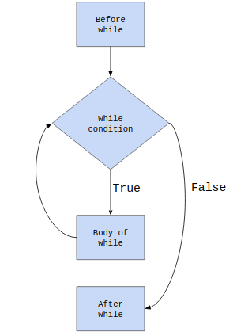
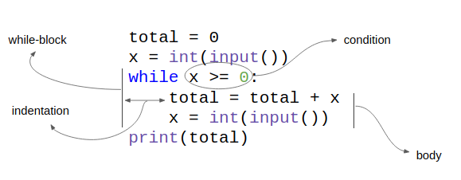

Home Lesson-3.2
Lesson-3.1
Loops
Introduction
Consider the following problem:
Print the sum of the first five positive integers.
With our current knowledge of Python, how do we solve this?
xxxxxxxxxx11print(1 + 2 + 3 + 4 + 5)How about the following problem?
Print the sum of the first 1,000,000 positive integers.
The earlier approach is not going to work. If it takes about five seconds on average to write a number followed by the + symbol, it will take nearly 50 days to sum all 1 million integers. This is assuming that we work like machines that don't need food or sleep. All of this just to do something as trivial as finding the sum of some numbers. This is where loops come in.
while
The "loopy" solution for this problem:
xxxxxxxxxx71total = 02num = 03while num < 1000000:4 num = num + 15 total = total + num6print(total)7# Rest of code will follow below this commentwhile is a keyword in Python. The expression adjacent to while is a boolean expression, called the while-condition, or just the condition. Lines 4 and 5 make up the body of while. If the condition evaluates to True, then the body of while is executed. After that, the control loops back to line-3, where the condition is evaluated again. As long as the condition is True, the body of while keeps getting executed. The moment the condition becomes False, the body of the while will be skipped and control will transfer to line-6. The body of the while-loop must always be indented. This helps to separate the body of the loop from the rest of the code.
A visual representation is given below:

Let us consider another example:
Keep accepting integers as input from the user until the user enters a negative number. Print the sum of the positive numbers entered by the user. Print 0 if the user doesn't enter any positive integer.
The visual representation of the code is given below:

One final example before closing this section:
Keep accepting integers as input from the user until the user enters a negative number. Print the maximum among the positive numbers entered by the user. Print 0 if the user doesn't enter any positive integer.
Solution
xxxxxxxxxx101# Initialize2num = int(input())3max_num = 04# Loop5while num >= 0:6 if num > max_num:7 max_num = num8 num = int(input())9# Print output10print(max_num)Note that lines 6-8 make up the body of while and are indented. Lines 1, 4 and 9 have some comments which are meant to help the reader understand what is happening in the code that follows them.
break, continue
break and continue are keywords in Python and are associated with loops. The break statement is used to exit out of a loop without executing any code that comes below it. For example:
xxxxxxxxxx61num = 12while True:3 if (num % 2 == 0) and (num % 3 == 0) and (num % 4 == 0):4 break5 num = num + 16print(num)The above code prints the smallest positive integer that is divisible by 2, 3 and 4, which is the same as the LCM of (2, 3, 4). The moment this number is found, the code breaks out of the loop.
The continue statement is used to move to the next iteration of the loop, skipping whatever code comes below it. For example:
xxxxxxxxxx61x = 02while x < 50:3 x = x + 14 if x % 3 != 0:5 continue6 print(x)The above code prints all positive integers less than or equal to 50 that are divisible by 3. Whenever x is not divisible by 3, we do not want to print the number, so we continue to the next iteration.
The similarity between break and continue is that whenever either statement is encountered in a loop, all the statements that follow it are skipped. The main difference is that, break exits the loop whereas continue moves to the next iteration.
break and continue are interesting features offered by Python. However, it is important to note that both these examples can be written without using break or continue. It is left as an exercise for the reader to figure out how this can be done.
Activity Questions
- Accept a positive integer
xas input and print the number of factors ofx. Divide your test cases into two classes. The first class should have numbers which are perfect squares, while the second class should have numbers which are not perfect squares. Do you observe any pattern? - Accept a pair of positive integers as input and print their GCD and LCM.
- Accept a positive integer as input and print the first digit in the number.
- Accept a positive integer as input and print the sum of the digits in the number.
- Accept a positive integer
nas input from the user. Find the sum of the following series up tonterms:
- Consider the following sequence:
Let b the smallest element in this sequence that is divisible by . How many digits does have?
- A bot starts at the origin and can make the following moves:
- UP
- DOWN
- LEFT
- RIGHT
Each move has a magnitude of 1 unit. You are given the sequence moves made by the bot. The first entry in the sequence is START while the last entry in the sequence is STOP:
xxxxxxxxxx81START2UP3RIGHT4LEFT5LEFT6DOWN7UP8STOP
Find the distance of the bot from the origin.
Feedback
Please fill this form. This feedback will help us make the lessons better.
xxxxxxxxxx11Lesson number = 3.1